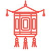
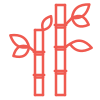

китайский
язык
Библиотека по уровням HSK, словарь, карточки и ИИ-помощник — в одном месте.


Библиотека по уровням HSK, словарь, карточки и ИИ-помощник — всё для изучения китайского в одном месте.
разделы
уровни HSK
2.0 и 3.0 все
карточки
Слова свайпами, колоды от преподавателя и карточки по фото страницы тетради
Слова свайпами и по фото тетради
словарь
Весь БКРС прямо на сайте: поиск по слову или пиньиню и рукописный ввод
БКРС прямо на сайте
библиотека
Материалы по уровням HSK: фонетика, грамматика, иероглифика и разговорные фразы
Учебные материалы, грамматика, фонетика и иероглифика по уровням
ИИ-помощник
Объяснит слово, грамматику и разницу между синонимами
Объяснит слово, грамматику и разницу синонимов
культура
культура Китая
Фильмы о Китае и чэнъюи — идиомы с историями их происхождения.
занятия
занятия
с преподавателем
Преподаватель китайского языка с опытом работы с учениками разных уровней — от полных новичков до подготовки к HSK 4–6. Индивидуальный подход, акцент на практику и понимание логики языка, а не только заучивание.
подробнее о преподавателе и о том, как проходят занятияпробное занятие
запись в Telegram- от нуля до подготовки к HSK 4–6
- индивидуальный подход
- практика и логика языка, а не зубрёжка
- материалы учебников разбираем на уроке
занятия с преподавателем
От полных новичков до подготовки к HSK 4–6. Индивидуальный подход и упор на практику.
пробное занятие